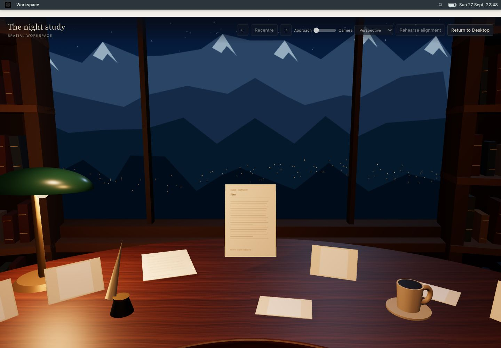
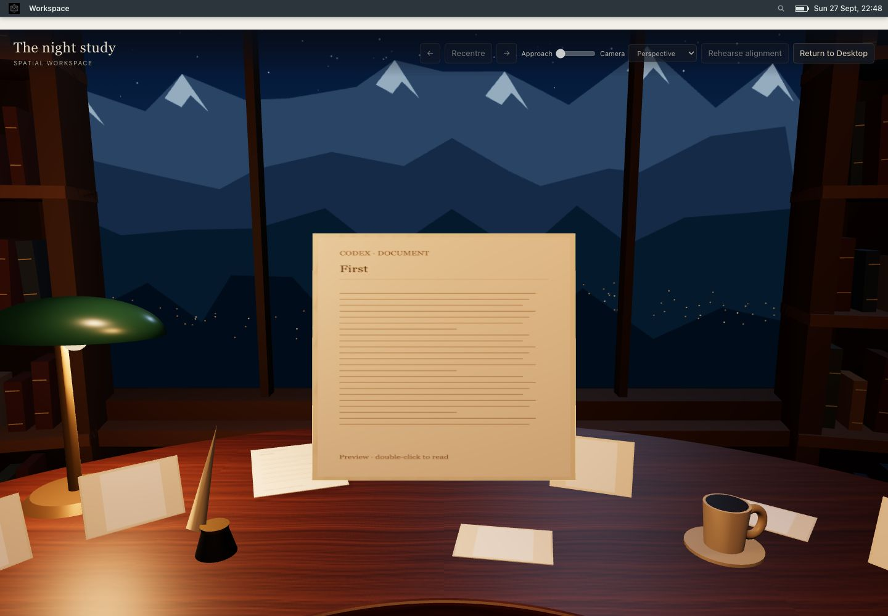
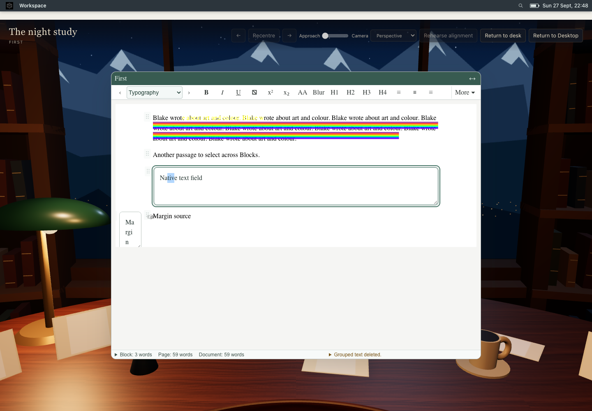
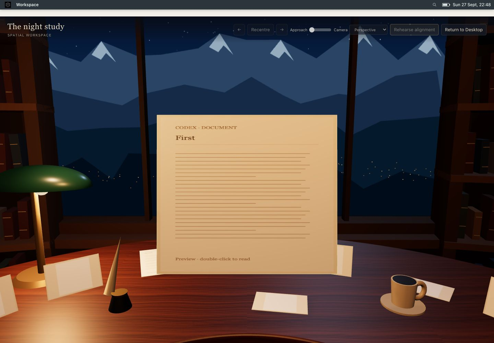
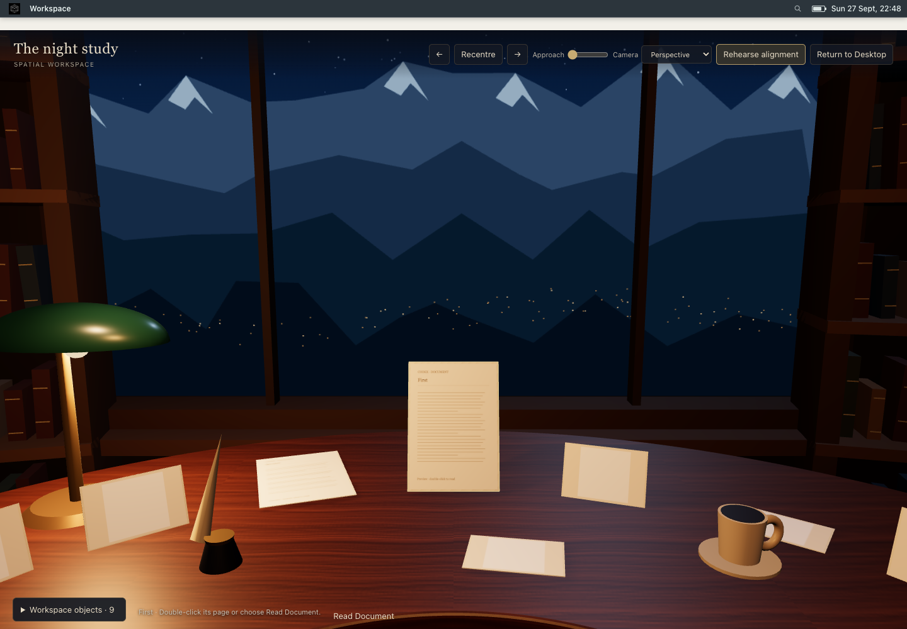

The accepted A study is unchanged. The page lifts, turns, approaches and broadens into a comfortable editing rectangle; a short crossfade introduces the live Document Window. Return reverses the path to the saved physical placement.
Implementation report · Browser results · Open replay separately





Run Vite with VITE_SPATIAL_WORKSPACE=1. Open an existing Document, choose Workspace → Presentations → Create Spatial, select its page and choose Read Document (or double-click it). Type, select text, open Entity tools, toggle Compact, then Return to desk. With reduced motion enabled the transition is immediate.
The proxy remains a schematic manuscript preview. The animation bridges physical page proportions and the larger live editing surface; saved placements are never enlarged.